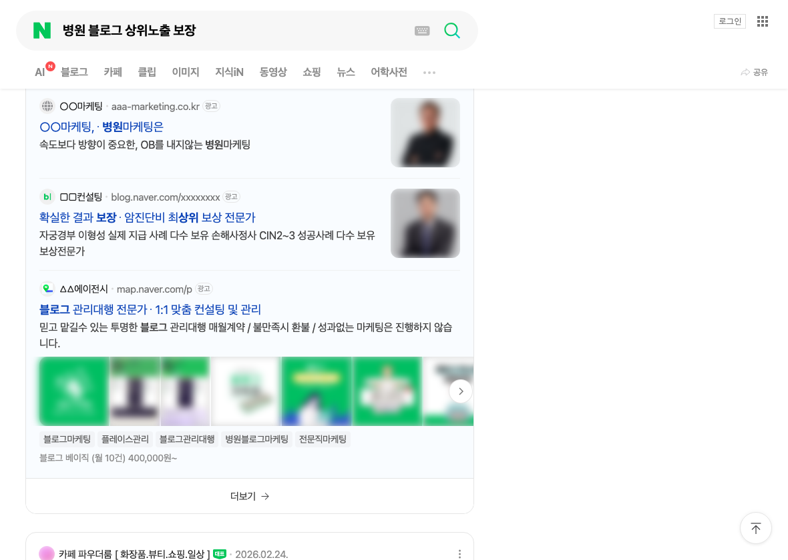
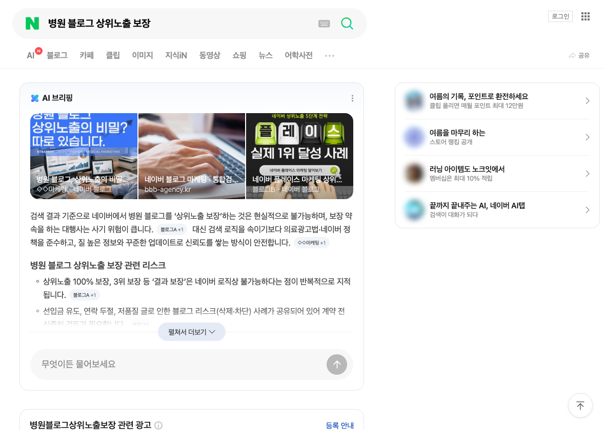
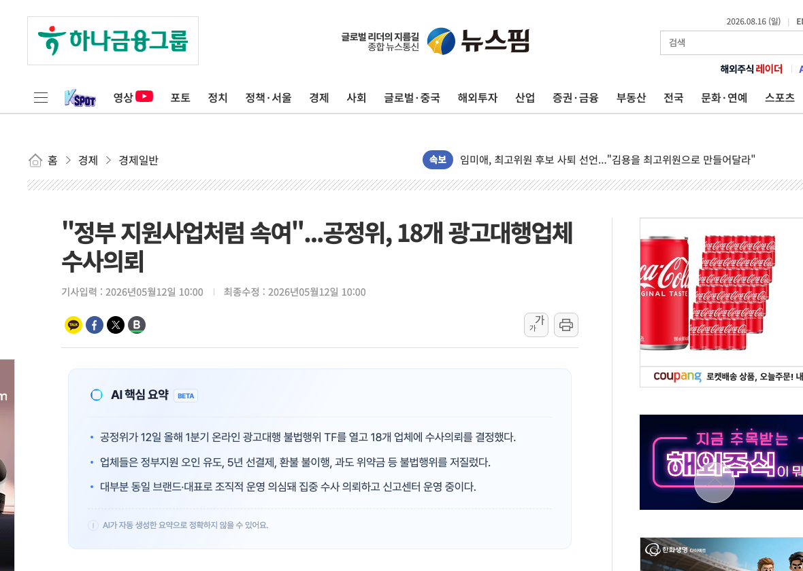
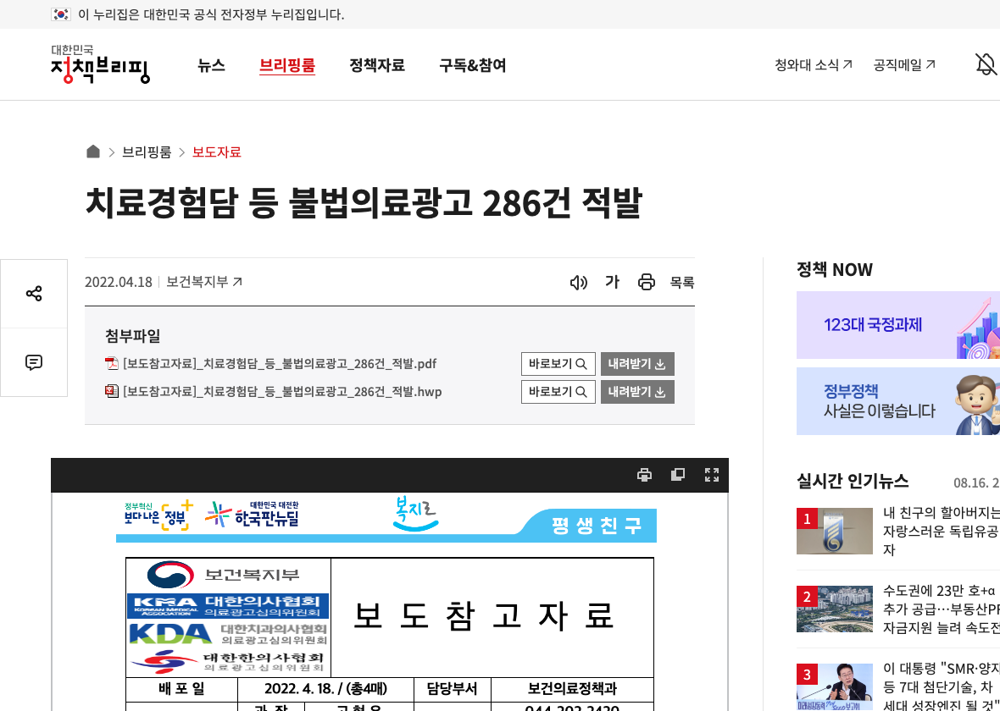
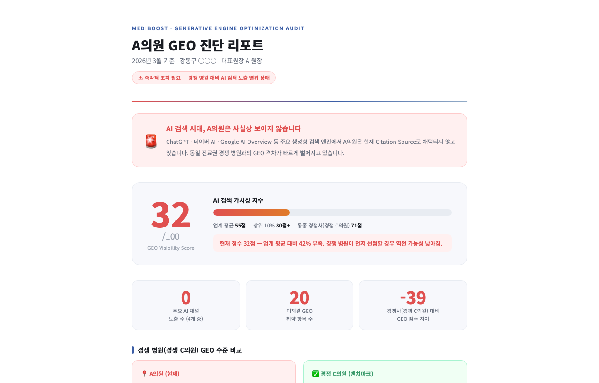
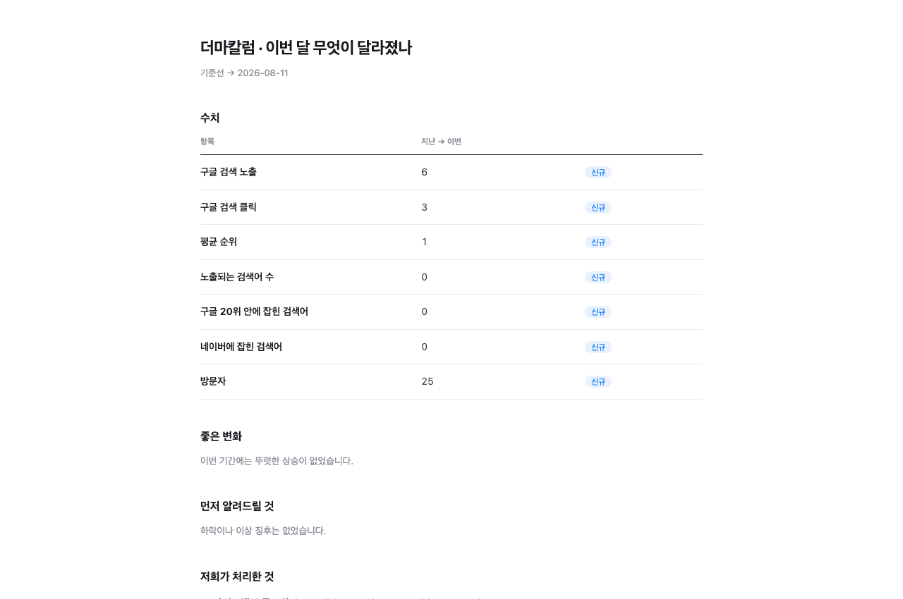
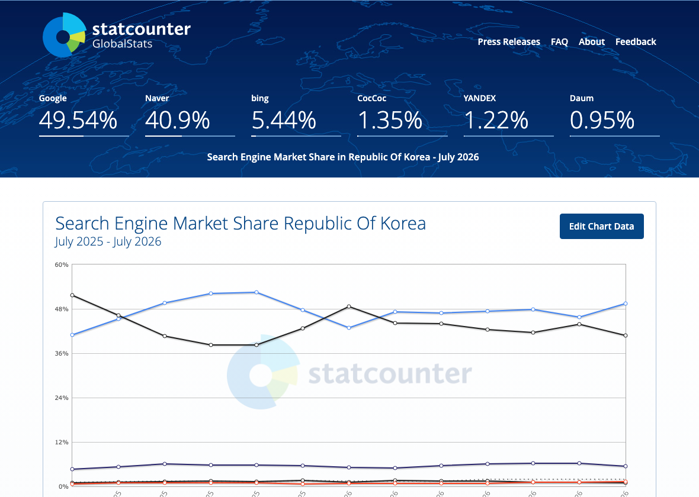
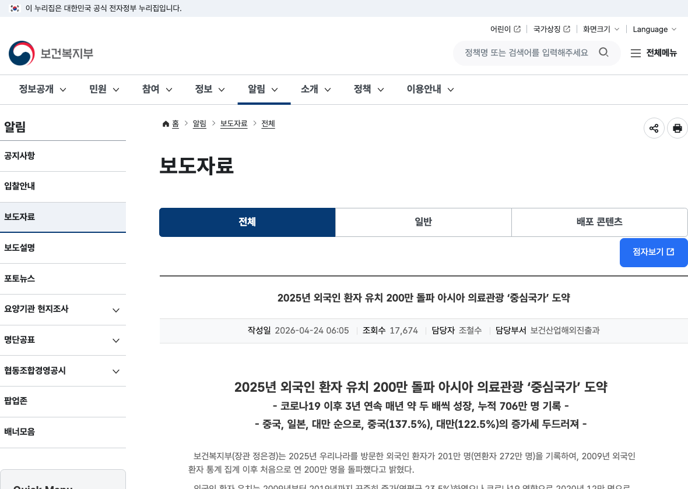
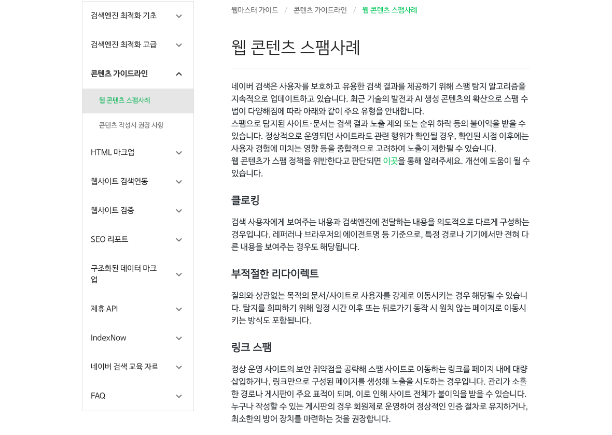

대행사 선정 · 성과 측정 · 검색 채널 변화 · GEO
검색어 : 병원 블로그 상위노출 보장 · 업체명 가림

판매 단위 : 네이버 단일 채널 · 노출량 · 월 발행 건수
"네이버에서 병원 블로그를 '상위노출 보장'하는 것은 현실적으로 불가능하며, 보장 약속을 하는 대행사는 사기 위험이 큽니다."
네이버 AI 브리핑 · '병원 블로그 상위노출 보장' 검색 결과 · 2026.08
네이버 알고리즘 변화 · 검색 채널 증가 → 노출 물량만으로는 유지되지 않음
확인 : 매체비 / 대행수수료 분리
| 항목 | 계약서에 있어야 할 내용 |
|---|---|
| 업무 범위 | 무엇을 하는지와 함께 범위에 포함되지 않는 것도 적혀 있는가 |
| 비용 구분 | 대행료와 별개로 광고비·유료도구 비용은 병원 부담임이 명시돼 있는가 |
| 계약기간 | 최소 의무기간과 연장·해지 통지 방법이 정해져 있는가 |
| 콘텐츠 권리 | 대금 완납 시 제작물의 저작재산권이 병원에 귀속되는가 |
| 검수 절차 | 초안 검수 기한과 수정 포함 횟수가 정해져 있는가 |
| 의료광고 | 위험 표현 사전 검토와 최종 확인 책임의 소재가 적혀 있는가 |
| 성과 표현 | 순위·노출을 보장하지 않는다는 문구가 있는가 |
빠진 항목 → 계약 전 추가 요청 가능
계약 종료 후 남는 자산 확인
출처 : 공정거래위원회 「온라인 광고대행 불법행위 대응 TF」 수사의뢰 (2026.05.12)

복수 항목 해당 시 추가 확인
무엇을 몇 건, 어떤 절차로 하는지 말로 설명된다
광고·분석 계정이 병원 명의로 개설된다
같은 기준으로 전월과 비교할 수 있다
의료광고 문구를 게시 전에 거르는 절차가 있다
"그건 보장 못 합니다"라고 먼저 이야기한다
실명 사례가 없으면 → 익명 전·후 데이터 요청 | 실행은 위임 가능 · 무엇을 말할지는 원장이 결정 | 미팅에서 업체가 우리에게 한 질문 수 = 이해하려는 의지
"계약을 통해 제3자에게 광고를 대행하는 것은 가능하나, 광고의 주체는 의료기관 개설자·의료기관의 장 또는 의료인이 되어야 하며, 계약에 따른 제3자 의료광고의 의료법 위반행위 책임은 의료인 등에게 귀속됩니다."
보건복지부 「치료경험담 등 불법의료광고 286건 적발」 보도참고자료 · 2022.04.18
의료광고 책임 → 의료기관
오늘 : 계약서에서 기간 · 산출물 소유 · 계정 조항 세 곳을 찾아 사진으로 보관
안전한 다음 단계 안내 : 작성자 표기 · 관련 글 연결 · 다음 글 예고 | "지금 전화하세요"식 유도는 의료법상 환자 유인 소지
2 → 3 구간에서 블로그는 홍보물이 아니라 예약 전 진료실
초진 문진표 항목 1개 추가
접수 체크 → 월 집계 · 개별 응답은 부정확해도 3개월 합계는 방향을 보여줌 · "모름"도 기록
| 항목 | 형태 | 확인 포인트 |
|---|---|---|
| 매체비 집행 내역 | 플랫폼별 실제 결제액 | 견적서와 일치하는가 |
| 발행 산출물 목록 | URL 전체 목록 | 실제로 살아 있는 링크인가 |
| 유입 수 | 채널별 세션·클릭 | 같은 도구로 매달 같은 기준인가 |
| 문의 수 | 전화·톡·폼 건수 | 병원 접수 기록과 맞는가 |
| 전월 대비 | 증감과 그 이유 | 수치만 있고 해석이 없지 않은가 |
| 다음 달 계획 | 무엇을 왜 바꾸는지 | 지난달과 같은 내용의 반복이 아닌가 |
카톡이나 메일에 복사해서 쓰는 용도 · 오늘 자료에 텍스트로 포함
"다음 달 보고서부터 아래 항목을 포함해 주세요.
1. 매체비 집행 내역 (플랫폼별 실제 결제액)
2. 발행 산출물 URL 전체 목록
3. 채널별 유입 수
4. 문의 수 (전화·톡·폼)
5. 전월 대비 증감과 그 이유
6. 다음 달 계획
제공이 어려운 항목이 있으면 이유를 함께 알려주세요."
병원명 가림
점수 = 전·후 비교용 참고 지표

병원명 가림

여전히 가장 큰 유입원. 다만 순위 경쟁은 이미 포화
"근처 OO과"로 찾을 때. 정보 정확성이 곧 성과
후기와 평판. 병원이 통제하기 가장 어려운 영역
새로 생긴 발견 경로. 답변 안에 인용될지가 관건
목표 : 4개 채널에서 같은 정보
출처 : StatCounter GlobalStats, 대한민국 검색엔진 점유율 (2026.07)

유입 채널 : 구글 · AI · 국내 검색 순위와 무관
출처 : 보건복지부·한국보건산업진흥원 「2025년 외국인환자 유치실적」 (2026.04.24)

보완책 : 초진 문진 유입경로 기록

문서 원문 : "스팸으로 탐지된 사이트·문서는 검색 결과 노출 제외 또는 순위 하락 등의 불이익을 받을 수 있습니다."
키워드가 아니라 환자가 실제로 묻는 문장 단위로 답한다
실명과 소속, 확인 가능한 경력이 글에 붙어 있다
크롤러가 페이지에 도달하고 본문을 텍스트로 읽는다
플레이스·홈페이지·디렉토리의 병원 정보가 서로 같다
우선순위 : 정보 일관성 → 진료시간 · 주소 · 진료과목
환자는 글에서 병원의 결을 읽음 · 글이 만든 기대가 어떤 환자가 오는지도 정함
한 편에 최소 두 가지 · 대행사 원고 검수 기준으로 사용
| 항목 | 글에 들어가는 형태 |
|---|---|
| 치료를 나누는 기준 | 같은 증상인데 방법이 달라지는 결정 변수 |
| 멈추는 기준 | 더 하지 않고 끝내는 지점 |
| 권하지 않는 경우 | 환자가 원해도 말리는 케이스 |
| 기대를 낮추는 지점 | 효과의 한계 · 회복 기간의 현실 |
| 절충 | 효과와 부작용 사이에서 무엇을 우선하는지 |
| 상담실 단골 질문 | 실제 질문과 원장의 실제 답 |
| 흔한 오해 | 환자가 잘못 알고 오는 것 |
| 단정하지 않는 부분 | 의료진도 확언하지 않는 영역 |
전부 새로 만드는 것이 아니라, 상담실에서 이미 하고 있는 말을 글로 옮기는 것
대행사 원고 검수용
범위 : 읽힐 수 있는 상태까지 · 노출 보장 아님
| 결함 | 증상 | 조치 |
|---|---|---|
| HTTPS 미적용 | 주소창에 '주의 요함'으로 표시됨 | 보안 인증서 적용 |
| 이미지 속 텍스트 | 진료·가격 안내가 그림 파일로만 존재 | 본문 텍스트로 다시 작성 |
| robots.txt sitemap.xml 부재 | 크롤러가 페이지 목록을 못 찾음 | 파일 생성·등록 |
OpenAI 계열 봇 직접 접근 차단 · 일반 검색엔진은 정상 수집
판단 근거 : 유입경로 기록
챗GPT · 10분
오류 원인 대부분 : 플레이스 · 홈페이지 옛 정보
| 질문 | 우리 병원 | 먼저 나온 곳 | 메모 |
|---|---|---|---|
| ○○동 (진료과) 추천 | 미언급 / 3번째 | A의원 | 후기 수가 많음 |
| (시술명) 잘하는 곳 | 미언급 | B의원 | 가격 안내 페이지 있음 |
| (우리 병원) 어떤 곳 | 정보 일부 오류 | - | 진료시간 옛날 정보 |
| (증상) 어디 가야 하나 | 미언급 | C의원 | 해당 질문 글 없음 |
비용 0원 · 병원 내부에서 가능
| 흔한 이름 | 실제로 하는 일 |
|---|---|
| 블로그 대행 | 예약 전 진료실 운영 |
| 콘텐츠 제작 | 원장 지식의 자산화 |
| GEO | AI가 참고할 공개 근거 만들기 |
| 다국어 번역 | 진료 기준의 현지 언어화 |
| 모니터링 | 원장이 직접 확인할 판단 근거 |
오른쪽 기준으로 보면, 무엇을 맡기고 무엇을 확인할지가 달라짐
위에 해당하면 계약을 권하지 않음 · 오늘 자료만 가져가셔도 됩니다
노출 · 순위 · 유입 보장 없음 · 문의는 QR
마케팅을 잘 아실 필요는 없습니다. 자료와 계약 점검 체크리스트는 QR로 공유드립니다.